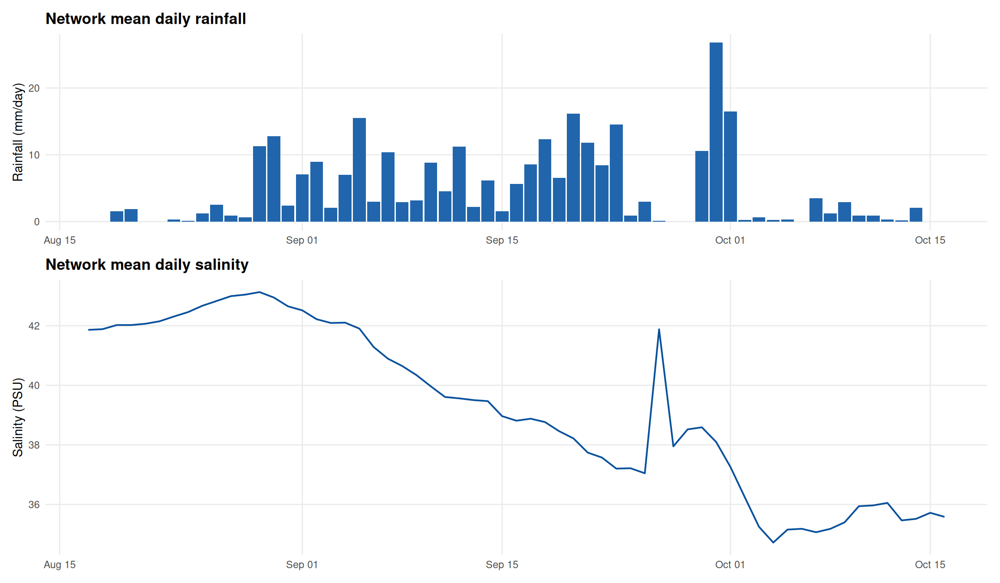
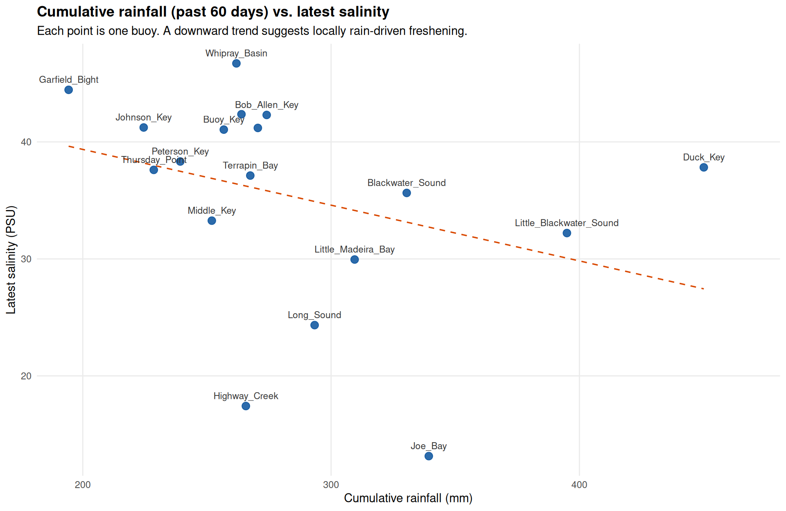

Buoy-mounted rain gauges and salinity sensors, past 60 days, from SECOORA ERDDAP Everglades National Park buoys. Report: 2026-10-16 11:54 EDT · Latest data: 2026-10-16 08:06 EDT
Network mean rainfall
284 mm
Wettest buoy
Duck_Key
Freshest buoy (latest)
Joe_Bay
Rainfall–salinity correlation
r = -0.33
Florida Bay salinity depends on both local rainfall (falling directly on the bay) and freshwater delivered from elsewhere — mainly overland/canal flow out of the Everglades watershed (Taylor Slough, Shark River Slough, and South Florida Water Management District canals) reaching the bay well after it fell as rain, often miles away.
The two maps above let you compare where it rained against where the water is fresh right now. If the freshest buoys are also the wettest, that points to local rain-driven freshening. If the freshest buoys sit in places with modest local rainfall, the fresher water is more likely arriving from upstream Everglades inflow rather than falling in place.
The scatter plot on the Rainfall vs Salinity tab tests this directly across all buoys, and the time series tab shows whether network-wide salinity dips line up with rain events or drifts independently of them.

The top panel is the network mean daily rainfall (each buoy’s daily total, averaged across all reporting buoys). The bottom panel is the network mean daily salinity. A short-lived dip in salinity right after a rain spike suggests a direct, local response; a longer-term drift with no clear tie to individual rain days points to a slower-acting or upstream source.

Each point is one buoy: x is that buoy’s total rainfall over the past 60 days; y is its most recent salinity reading. A downward trend (more local rain → lower salinity) would support locally rain-driven freshening. A flat or upward trend means the buoys with the most local rain aren’t the freshest ones — evidence that the low-salinity water at those buoys is arriving from somewhere else in the watershed rather than falling there directly.
This is a snapshot correlation across buoys, not a rainfall-runoff model — it’s a diagnostic starting point, not proof of source. Treat a strong relationship as a lead worth checking against known freshwater inflow structures, and a weak one as a sign to look upstream (Everglades sheet flow and canal discharge) rather than at local weather.